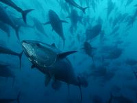
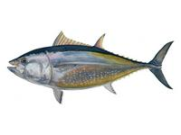

Photos
Jadran tuna factory
 Factory building
Factory building Refrigerator interior 1
Refrigerator interior 1 Refrigerator interior 2
Refrigerator interior 2 Refrigerator interior 3
Refrigerator interior 3 Refrigerator interior 4
Refrigerator interior 4 Refrigerator interior 5
Refrigerator interior 5 Refrigerator interior 6
Refrigerator interior 6 Refrigerator interior 7
Refrigerator interior 7 Refrigerator interior 8
Refrigerator interior 8 Refrigerator interior 9
Refrigerator interior 9- Transport trucks
 Factory building
Factory building Refrigerator interior 1
Refrigerator interior 1 Refrigerator interior 2
Refrigerator interior 2 Refrigerator interior 3
Refrigerator interior 3 Refrigerator interior 4
Refrigerator interior 4 Refrigerator interior 5
Refrigerator interior 5 Refrigerator interior 6
Refrigerator interior 6 Refrigerator interior 7
Refrigerator interior 7 Refrigerator interior 8
Refrigerator interior 8 Refrigerator interior 9
Refrigerator interior 9Jadran tuna fishing fleet
 Carica (Empress)
Carica (Empress) J. T. fleet in Biograd harbour
J. T. fleet in Biograd harbour Modern fishing fleet
Modern fishing fleet Kali
Kali Fishing fleet
Fishing fleet Tuljan
Tuljan Refrigerator ship Ledenik
Refrigerator ship Ledenik- Kunjka transporting tuna food
 Carica (Empress)
Carica (Empress) J. T. fleet in Biograd harbour
J. T. fleet in Biograd harbour Modern fishing fleet
Modern fishing fleet Kali
Kali Fishing fleet
Fishing fleet Tuljan
Tuljan Refrigerator ship Ledenik
Refrigerator ship LedenikTuna farming
-  Plavoperajna tuna
-  Bluefin tuna
 Jabuka fishing area
Jabuka fishing area Tuna fishing
Tuna fishing Tuna cage transport
Tuna cage transport Tuna feeding
Tuna feeding Frozen tuna food, herring
Frozen tuna food, herring- Frozen tuna food, herring
- Frozen tuna food, herring
 Frozen tuna food, sand eal
Frozen tuna food, sand eal Frozen tuna food, Atlantic mackerel
Frozen tuna food, Atlantic mackerel- Tuna feeding
- Tuna feeding
- Tuna feeding
- Tuna feeding
 Tuna feeding
Tuna feeding 2007 harvest
2007 harvest Transport to Japan
Transport to Japan
 Jabuka fishing area
Jabuka fishing area Tuna fishing
Tuna fishing Tuna cage transport
Tuna cage transport Tuna feeding
Tuna feeding Frozen tuna food, herring
Frozen tuna food, herring Frozen tuna food, sand eal
Frozen tuna food, sand eal Frozen tuna food, Atlantic mackerel
Frozen tuna food, Atlantic mackerel Tuna feeding
Tuna feeding 2007 harvest
2007 harvest Transport to Japan
Transport to Japan Bluefin tuna meat
Bluefin tuna meat{kind=link}
{kind=link}
{kind=link}
{kind=link}
{kind=link}
{kind=link}
{kind=link}
{kind=link}
{kind=link}
{kind=link}
{kind=link}